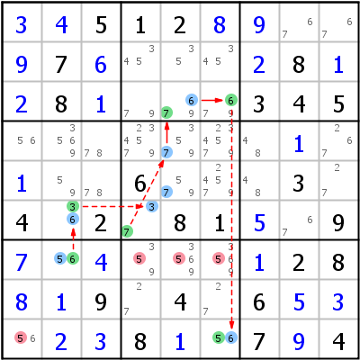

HoDoKu Lösungstechnik-Index: Beispiel für "Grouped Alternate Inference Chain Type 1"

Originales Sudoku:
..512.....7.....8..8....345............6...3.4.2.81..9.......28..9.4.6.....8..7.4
Verwenden Sie die folgende Zeile um das Sudoku in HoDoKu zu laden:
:0711:5:+3+4512+8+9..+97+6...+28+1+28+1...345.......+1.+1..6...3.4.2.81+5.9+7.+4...+128+8+19.4.6+5+3.+2+38+1.7+94::574 575 576 591:
Die folgende Darstellung kann per Zwischenablage in die meisten Sudoku-Programme eingefügt werden:
.--------------.----------------------.-------------. | 3 4 5 | 1 2 8 | 9 67 67 | | 9 7 6 | 345 35 345 | 2 8 1 | | 2 8 1 | 79 679 679 | 3 4 5 | :--------------+----------------------+-------------: | 56 3569 78 | 234579 3579 234579 | 48 1 267 | | 1 59 78 | 6 579 24579 | 48 3 27 | | 4 36 2 | 37 8 1 | 5 67 9 | :--------------+----------------------+-------------: | 7 56 4 | 359 3569 3569 | 1 2 8 | | 8 1 9 | 27 4 27 | 6 5 3 | | 56 2 3 | 8 1 56 | 7 9 4 | '--------------'----------------------'-------------'
Darstellung des Lösungsschrittes:
.----------------.--------------------------.-------------. | 3 4 5 | 1 2 8 | 9 67 67 | | 9 7 6 | 345 35 345 | 2 8 1 | | 2 8 1 | 79 *679 *679 | 3 4 5 | :----------------+--------------------------+-------------: | 56 3569 78 | 234579 *3579 234579 | 48 1 267 | | 1 59 78 | 6 *579 24579 | 48 3 27 | | 4 *36 2 | *37 8 1 | 5 67 9 | :----------------+--------------------------+-------------: | 7 *56 4 | 3-59 3-569 3-569 | 1 2 8 | | 8 1 9 | 27 4 27 | 6 5 3 | | -56 2 3 | 8 1 *56 | 7 9 4 | '----------------'--------------------------'-------------' Grouped AIC 5- r7c2 -6- r6c2 -3- r6c4 -7- r45c5 =7= r3c5 =6= r3c6 -6- r9c6 -5 => r7c456,r9c1<>5
Copyright © 2008-12 von Bernhard Hobiger
Zuletzt geändert am 5. Mai 2025 von shorty#3746
(basierend auf dem 1to9only Github-Repo)
Alles Material auf dieser Site unterliegt der GNU FDLv1.3.